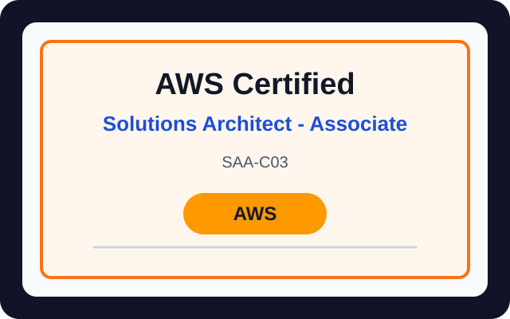
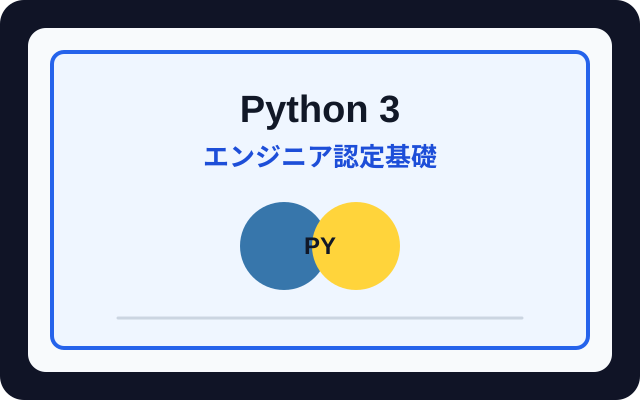
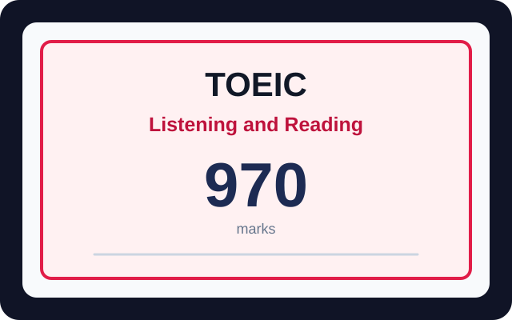
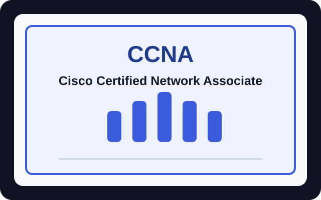

クラウド基礎
AWSの主要サービス、IAMの基礎、ネットワーク、ストレージ、コンピューティング、アーキテクチャの考え方を学んでいます。
自己紹介
1997年生まれ、ミャンマー出身です。2020年に地元の技術大学を卒業しました。大学時代に日本語を学び、2023年にJLPT N2に合格しました。同年、株式会社ALTXでネットワークエンジニアとして入社し、最初の数か月でCCNAを取得。その後、データセンター運用に携わっています。現在はAWSと自動化の学習を進め、DevOpsやクラウドエンジニアを目指しています。
経験
3年以上にわたりデータセンター運用の現場で、重要なITインフラの安定稼働を支えてきました。お客様対応、電話・メールによる問い合わせ対応、月次運用レポート作成、施設監視、リモートハンズサービスを担当しました。ケーブル交換、SFPモジュール交換、ケーブル清掃・再挿入、サーバーやネットワーク機器の電源投入・切断などを、顧客の依頼に応じて実施しました。これらの経験を通じて、技術的なトラブルシューティング力、細部への注意力、ミッション・クリティカルな環境での協働力を養ってきました。
スキル
AWSの主要サービス、IAMの基礎、ネットワーク、ストレージ、コンピューティング、アーキテクチャの考え方を学んでいます。
Pythonスクリプト、シェル作業、Git、再現可能なセットアップ手順、簡単な運用ツールの作成に取り組んでいます。
明確なドキュメント作成、トラブルシューティング、セキュリティ意識、監視、保守しやすい運用に重点を置いています。
プロジェクト
S3、CloudFront、DNS設計、基本的なデプロイ手順を意識したポートフォリオ風サイトの構築を行いました。
ファイル整理、システム出力確認、クリーンなコマンドライン作業を支えるスクリプトを作成しています。
資格

AWSSAA-C03
2026年6月取得

PythonPython engineering foundation certification
2026年1月取得

English970点
2025年3月取得

CiscoCisco Certified Network Associate
2023年11月取得